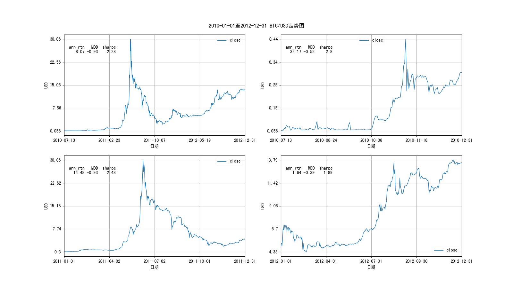
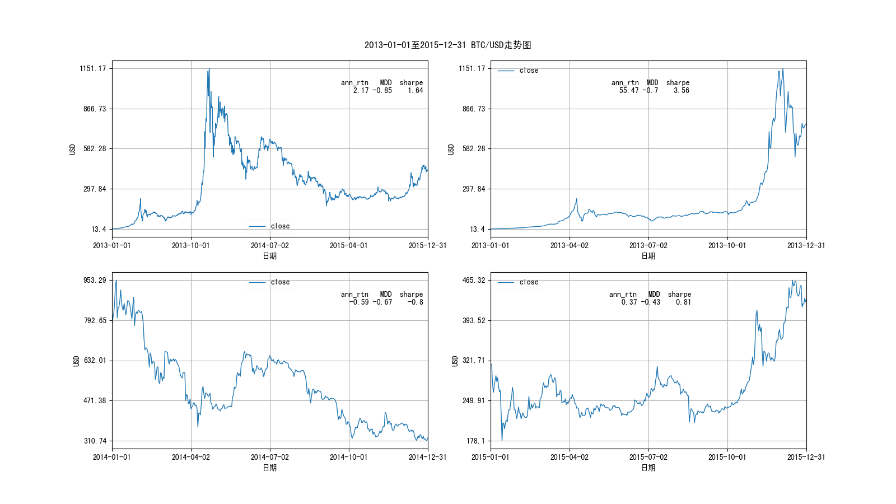
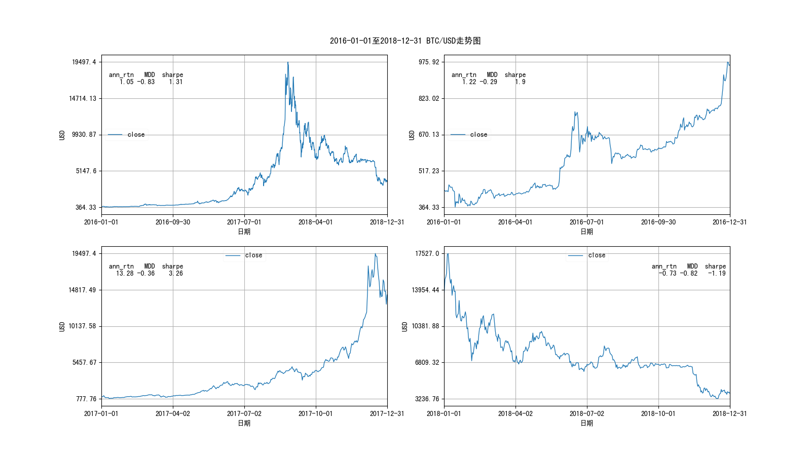
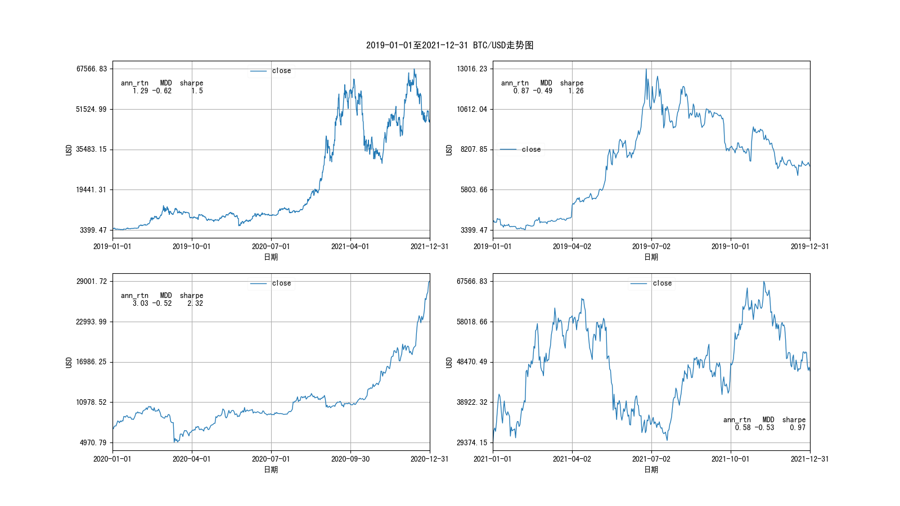
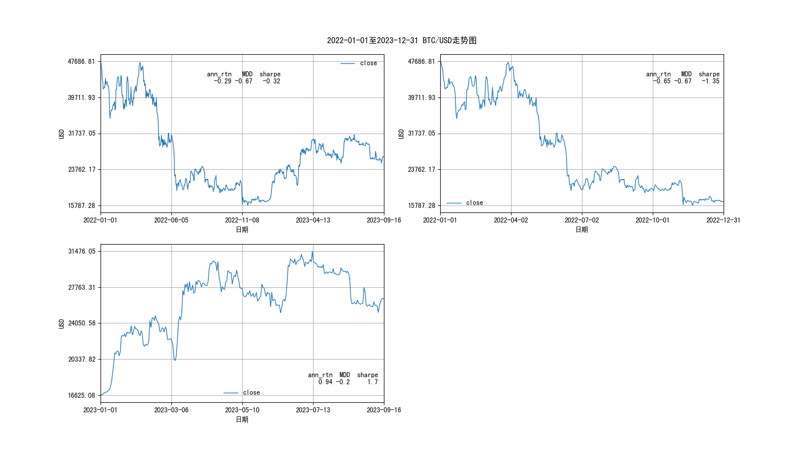

本文首先介绍了一些比特币早期价格的历史；然后分析了比特币对数价格（$logP$）与对数供给量（$logS$）可能的一些回归关系；接着分析了历史上的3次减半；最后根据总结的规律，对之后的减半周期几个极值（最低价、减半价、最高价）及对应时间范围进行一些推测。
引言
比特币神话般的价格涨幅，一直是投资界引人入胜的故事。那么，比特币早期价格是怎样的呢？本文第一部分简要回顾了一些btc交易的早期历史。
在做出比特币历史对数价格曲线后，忍不住会有对它进行回归建模的冲动，本文第二部分即尝试了这方面的工作。
4年的减半周期，对比特币价格有很重大的影响，这似乎成了加密投资圈的共识。那么，减半是否有某些定量的规律呢？本文第三部分分析了过去3次减半，并总结汇总了一些重要的统计值，并进行了一些极值的建模验证。
在有了价格拟合和减半规律后，本文在第四部分对即将到来的新减半周期进行一些合理的推测，描述了比特币价格经过多次减半周期，不断走向稳定的动态过程。
当然，限于样本量少及其他随机因素，本文只是对可能存在的一些规律的简单猜测，动机仅为了好玩，不构成投资建议。
目录
[toc]
1. 比特币早期价格
本文先从比特币交易价格说起。
比特币诞生于2009-01-03，已知最早的价格，是由比特币第二位开发者Martti Malmi（网名Sirius）在2009-10-12发起的，他用5050个比特币换到了$5.02，每个比特币价格约为$0.000994，不足十分之一美分。可以参见推特（Martti Malmi发起第一笔比特币兑美元交易），对应的区块链交易记录（首个价格交易记录）。
不过这个事件知道的人不太多，更广为人知的是比特币披萨事件。
2010-05-18，美国弗罗里达州的程序员Laszlo Hanyecz在比特币论坛上发布了一篇名为Pizza for bitcoins?的帖子，他想用1万个比特币购买价值约25美元的2个披萨，折合每个比特币$0.0025。经过4天多的时间，他证实了该交易已经顺利完成。这是人们第一次可以用比特币购买真实商品，这个事件被比特币爱好者纪念，从此每年的5月22日成为“比特币披萨节”。
其实在比特币披萨事件之前，已经有了一个名为bitcoinmarket.com的比特币交易网站。
该网站由dwdollar开发建立，参见比特币论坛相关帖子。2010-03-16，该网站开始用真实的美元交易比特币，dwdollar将比特币的初始价格定在$0.0067/BC。次日（2010-03-17）正式上线，有4人开始在线交易比特币，开始交易的价格大概为$0.003。该网站主要利用PayPal进行交易，由于欺诈的盛行，Paypal于2011-06-04停止了对bitcoinmarket的支持，导致了用户转向其他交易所，其中最著名的就是Mt.Gox，该网站于2010-07-18出现在比特币论坛，见此处。
关于早期价格的情况不太好追溯，好在coinmarketcap上收录了自2010-07-13日以来的比特币价格数据，本篇文章的讨论便是基于这些数据进行。
本文重点讨论的是比特币的价格及周期，首先讨论比特币价格的某种可能回归。
说明：本文数据截止到2023-09-24日。
2. 比特币的价格
比特币价格的波动范围很大，为了直观全面的观察其趋势，可以采用对数价格作图，如下：

直观上，比特币对数价格似乎符合某种函数的拟合。比特币彩虹图就是比特币对数价格与上线天数的某种回归。
比特币先后经历了3次减半，分别是2012-11-28、2016-07-09、2020-05-11。据预测，下一次减半日期大概在2024-04-16。
比特币每次减半，每个区块的产量会减半，最终比特币的数量为21,000,000。比特币历史总产量对数图如下：

直观上比特币的对数价格与对数总供给量之间具有相似的趋势，可以猜测比特币对数价格（$logP$）是对数总供给量（$logS$）的某种可解析函数。
本文在拟合前，有一个期望的极限，即：
如比特币最终趋于稳定，并取代了美元成为本位币。则按照目前美元m2总量约20.9万亿折算，比特币的价格将接近100万美元/BTC。
符合上述预期的拟合才是合理的。
由于可解析函数可以进行泰勒展开，故可用$logS$的多项式展开来拟合$logP$：
$$
logP=\sum_{i=0}^{n}\alpha_i(logS)^i
$$
其中n为多项式的最高阶，是待定参数。毫无疑问随着n的增大，可以拟合的越好，本文假定n为较小的整数（n=1, 2, 3）。
n=1的拟合情况如下：

可见拟合的效果很好，$R^2$达到0.91，其中$R^2$的定义如下：
$$
R^2=1-\frac{SS_{res}}{SS_{tot}}
$$
$$
SS_{tot}=\sum_i(y_i-\bar{y})^2
$$
$$
SS_{res}=\sum_i(y_i-f_i)^2
$$
$f_i$为函数拟合的相应值。
由上图可知，一阶拟合下的回归关系为：
$$
logP=-131.5+8.4*logS
$$
如果比特币对数价格与对数供给量符合上述的1阶拟合，则根据拟合，最终比特币价格约为$$26,974.33$，这似乎不让人满意。
n=2的拟合如下：

$R^2$高达0.94，拟合结果如下：
$$
logP=750.85-101.07logS+3.39logS^2
$$
如果2阶拟合满足，则比特币最终价格约为$$70,070.92$。
n=3时，拟合效果如下：

$R^2$为0.95，此时的拟合关系为：
$$
logP=-16643.2+3153.22logS-199.43logS^2+4.21*logS^3
$$
3阶的比特币最终预测价格为$$151235.78$。
可见参数越多，$R^2$越高，拟合效果越好，但也越可能是过拟合。
尝试到6阶，发现这种情况下的比特币最终价格预测最高，为$$954,987.44$，接近1百万美元。如果比特币能够替换美元的地位，其理论价格应该差不多为1百万美元。
6阶拟合的曲线如下：

上图中的拟合公式如下：
$$
logP=&26.27logS^6-2517.02logS^5+100443.36logS^4-2137177.39logS^3+\&25572181.2logS^2-163146593.88logS+433571085.45 \label{eq-logP-logS-6-deg-01}
$$
采用最理想的6阶拟合，我们可以做出未来的价格预期曲线，如下：

由上述拟合可见，目前比特币还处于很早期的阶段，其价格尚未到达趋于稳定的阶段。大约在2042年之后，比特币价格会开始逐渐趋于稳定。
需要指出的是：
- 影响比特币价格的因素可能有很多，本文只是对其中可能的一种进行了回归分析，可能有失偏颇；
- 多项式拟合的参数会对样本很敏感，随着未来价格的大幅变大或变小，再次拟合的曲线肯定会相应的变化。
值得一提的是，按照对数供给量的多项式拟合，随着时间推移，比特币的供给量会趋于定值（具体为自2140年后不再减半），从而价格也会趋于某个定值。这与比特币创始的初衷相吻合，即按照当前价值不变的美元（实质上就是总美元M2量限定在约20万亿水平上）计算，最终比特币的价格会收敛，正如比特币的热爱者预期该价格会收敛于1百万美元/BTC那样。
之前的模型，如彩虹图所预言的价格（或对数价格）会以某种形式单调增长、直至永远，又如planB的S2F预言的每轮减半价格涨幅约10倍。这些理论，均认为比特币价格会近乎无限上涨，显然与实际情况有悖。
本文与他们的结论不同，按照本文的拟合，比特币按当前美元价值计算，是存在极限价格的。
由于比特币的总供给量随着时间推移基本上是确定的，上述回归自然是对未来价格的一种预测。
更详细的推测需要参考重要的时间节点及牛熊涨跌幅等规律，故本文接下来分析比特币减半周期，再进行价格区间及时间跨度相关的推测。
3. 比特币周期
为了划分出减半周期的阶段，需要先观察价格在逐年的表现，再根据表现划分出牛熊周期。
3.1 逐年走势
注：本小节只是想从价格逐年走势图分析牛熊大致区间，读者可以选择跳过，不影响后续阅读。后续需要对照行情可参考此节。
每3年汇在一张图中，做出逐年的价格走势及基本统计指标，如下：
2010.7.13–2012.12.31价格走势：

注意上图中左上第一张为全3年时间段的价格走势，后续3张为逐年走势，下同。
2013.01.01-2015.12.31价格走势：

2016.01.01-2018.12.31价格走势：

2019.01.01-2021.12.31走势：

2022.01.01-2023.09.16走势：

牛熊一般需要经历完整的盘整 -> 启动 -> 牛市 -> 崩盘 -> 熊市 -> 盘整的周期可见，依照大约4年的周期，比特币历史牛熊可如下划分：
- 2010.07.13 - 2015.05.01，对应2012.11.28日第一次减半的行情；
- 2015.01.01 - 2019.05.01，对应2016.07.09日第二次减半的行情；
- 2018.11.01 - 2023.03.01，对应2020.05.11日第三次减半的行情；
- 2022.10.01 - 今，对应约2024.04.16日第四次减半的行情，持续时间未知。
上述划分有重叠，是为了观察牛市启动前的最低价前和本轮周期最大回撤后的情况。
当然，上述划分不一定合理，毕竟23年之后的行情还没结束。
3.2 牛熊周期
有了上面的划分，可以对应的做出每轮牛熊走势的图。
2010.07.13 - 2015.05.01第一轮走势：

注意：上图中的最大回撤出现在减半之前，不是后续讨论的减半后最大回撤。
2015.01.01 - 2019.05.01第二轮走势：

2018.11.01 - 2023.03.01第三轮走势：

2022.10.01 - 今第四轮走势：

本文定义如下一些概念：
- 行情启动：上一轮回撤的最低价格为行情启动价，该日为行情启动日，第一次减半也采用减半前的最大回撤作为行情启动点；
- 最高涨幅：本轮减半之后的最高价与行情启动价之比；
- 盘整期：在上一轮牛市结束后的最低价到本轮减半的最高价之间，持续时间最长的回视最高价（阻力位）对应的时间段；
- 牛市：衡量的为减半行情中的牛市，定义为盘整期结束到本轮最高价之间的时间段，类似2011年的上涨不在本定义内；
- 熊市：衡量的减半行情后的熊市，定义为本轮减半后，最高价到最大回撤之间的时间段；
- 最大回撤：指的是本轮减半后的最大回撤，即从减半后最高价到最低价的跌幅。
可以总结每轮牛熊的统计值，如下表：
各减半周期统计总结表
| 第一轮减半 | 第二轮减半 | 第三轮减半 | 第四轮减半 | |
|---|---|---|---|---|
| 减半日 | 2012-11-28 | 2016-07-09 | 2020-05-11 | 2024-04-16 |
| 减半价 | 12.377 | 650.96 | 8601.796 | nan |
| 减半预测价 | 33.736 | 1399.326 | 12895.33 | 76458.321 |
| 减半预测真实价格比 | 2.726 | 2.15 | 1.499 | nan |
| 行情启动日 | 2011-11-18 | 2015-01-14 | 2018-12-15 | 2022-11-21 |
| 启动时距减半天数 | 376 | 542 | 513 | 512 |
| 启动价格 | 2.051 | 178.103 | 3236.762 | 15787.284 |
| 盘整开始日 | 2011-12-05 | 2016-06-04 | 2019-05-14 | NaT |
| 盘整结束日 | 2012-06-29 | 2016-11-19 | 2020-09-10 | NaT |
| 盘整最高价 | 228.199 | 766.308 | 13016.232 | nan |
| 最高价格日 | 2013-12-04 | 2017-12-16 | 2021-11-08 | NaT |
| 最高价格 | 1151.17 | 19497.4 | 67566.83 | nan |
| 最高涨幅 | 561.261 | 109.473 | 20.875 | nan |
| 最大回撤日 | 2015-01-14 | 2018-12-15 | 2022-11-21 | NaT |
| 最大回撤价 | 178.103 | 3236.762 | 15787.284 | nan |
| 最大回撤 | -0.845 | -0.834 | -0.766 | nan |
| 启动到盘整结束天数 | 224 | 675 | 635 | nan |
| 启动到最高价天数 | 747 | 1067 | 1059 | nan |
| 盘整结束距减半天数 | -152 | 133 | 122 | nan |
| 盘整持续天数 | 207 | 168 | 485 | nan |
| 牛市持续天数 | 523 | 392 | 424 | nan |
| 熊市持续天数 | 406 | 364 | 378 | nan |
关于上表的一些说明：
- 第四轮周期尚在进行中，没有完结，故数据有空缺。
- 减半预测值是根据第二部分的6阶模拟值计算所得，历史已发生的减半日价格低于该值。
从上表中可见如下有意思的结论（主要考虑最近两次已完成的减半周期）：
- 行情在减半前1年半（500多天）左右启动；
- 每轮减半的最高涨幅呈衰减的特点；
- 减半价格与预测价之间的差异越来越小；
- 每轮最大回撤呈现出变小的趋势；
- **从行情启动到减半后的最高值大约需要1000天（近3年）左右； **
- 行情启动到盘整结束需要600天左右；
- 最近两次减半，盘整结束于减半后约4个月之后；
- 牛市持续时间在1年以上；
- 熊市大约持续1年左右；
- 盘整持续时间至少在半年左右，可以长达1年以上。
如上总结，比特币每轮周期都有很多相似的行情规律，且每轮的最高最低比、最大回撤均呈现减小趋势。不过，也需要指出的是，牛熊的划分方法有主观性、可以有很多种，周期本身也带有主观性。
为了验证比特币波动性确实是呈下降趋势的，可以做出比特币90日滚动年化波动率时序图，如下：

从上图可见，若按照减半周期来看，比特币的波动是呈减小趋势的，这与Nassim Taleb所质疑的比特币波动性没有变小的结论不同（参见此处）。由此分析，我们可以合理的假定比特币价格最终会趋于稳定。
上图还有一个有意思的现象：比特币90日滚动年化波动率多次下降到0.23附近的位置，随着时间的推移，波动率纵然有所下降，但似乎始终没有低于此值。附带一提，0.23的年化波动率水平是低于大多数股票波动率的。
3.3 减半行情的极值规律
上一小节总结了一些减半的规律，本节将对减半的两个极值（最高涨幅、最大回撤）进行分析。
当然，我们还可以对减半日价格、每轮周期的最高价、最低价进行建模。
但是，最高价与最低价实际上是可以用历史价格、最高涨幅和最大回撤递推；随着减半次数的增加，第二部分预测的价格与减半价格之间的差距缩小，可以用其（对数总供给量6阶拟合函数）对减半价进行预测。
故而，本小节只讨论2个极值。
3.3.1 最高涨幅拟合
中文比特币社区著名的九神（ahr999），曾撰写过《囤比特币》系列文章，在其“囤比特币：你离财富自由还有多远？”一章中，提出一个很有意思的假设，即比特币每轮减半增长倍数呈线性或“指数递减”方式变化。
如减半周期与最高涨幅之间呈线性关系，则应满足如下关系：
$$
h_n=a+b*n,\ \ (n=1,2,3,…,33)
$$
其中h代表本轮减半行情的最高涨幅，n为减半周期数。
历史上发生过的3次减半行情最高涨幅与周期的线性拟合如下：

上图中x轴被替换成了日期，因为每个减半周期对应唯一的日期。虽然上图中的$R^2$较好，因为样本太少，很难说周期与涨幅是否符合线性关系。
如认可比特币2140年之后趋于稳定，则减半周期与减半行情最高涨幅的线性拟合如下：

可见此时线性拟合不是很合适。
下面考虑最高涨幅与周期呈指数衰减关系，即：
$$
h_n=a+be^{-cn}\ \ \ (n=1,2,3,…,33)
$$
拟合效果如下：

图中的x轴也从周期被替换成了日期，这样方便对照日期。
上图$R^2$接近1的原因在于：
- 样本太少，3参数的指数衰减可以很好的拟合4个最高涨幅；
- 样本的量级差异很大，作为分子的样本方差远远大于拟合值与真实值偏差的方差。
指数衰减拟合结果显示，比特币价格趋于稳定后，最高涨幅小于1，这不合理，主要原因是样本太少。
为了避免量级引起的误判，可采用对数最高涨幅拟合。对数最高涨幅与减半周期的线性回归关系如下：
$$
ln(h_n)=a+b*n,\ \ \ (n=1,2,3,…,33)
$$
这一拟合的结果如下：

可见对数涨幅与周期之间的线性拟合的效果有所下降。由上图，直观感觉对数最高涨幅是随着周期增大指数衰减的，即有如下关系：
$$
ln(h_n)=a+be^{-cn}\ \ \ (n=1,2,3,…,33) \label{eq-lnh-n-01}
$$
拟合效果如下：

可见这一拟合效果非常好，不过原因也是用了3个参数来模拟4个样本。该拟合是否符合实际，有待未来的行情进行验证。
如将周期改为对数周期，进行如下关系的拟合：
$$
ln(h_n)=a+b*ln(n)\ \ \ (n=1,2,3,…,33) \label{eq-lnh-lnn-01}
$$
拟合结果如下：

可见对数最高涨幅与对数周期之间的线性回归效果很好，在压低了量级影响后，线性关系（2参数拟合4个样本）仍然很显著。
上述$\eqref{eq-lnh-n-01}$和$\eqref{eq-lnh-lnn-01}$的拟合都可以作为减半周期最高涨幅的模型，第四部分中我们选定对数最高涨幅与周期呈指数衰减的$\eqref{eq-lnh-n-01}$模型进行讨论。
下面拟合每轮周期的最大回撤。
3.3.2 最大回撤拟合
仍然假定比特币价格最终会趋于稳定，即2140年之后的最大回撤接近1。
做出周期-最大回撤（绝对值）的附带线性回归的散点图，如下：

可见2参数的最大回撤线性拟合效果很好，我们可以将其作为最大回撤的拟合模型，即：
$$
mdd_n=0.87-0.026*n\ \ \ (n=1,2,3,…,33) \label{eq-mdd-n-01}
$$
如上式，预期减半周期的最大回撤线性减小，每一轮比上一轮减小0.026。
当然，随着未来样本量的增加，可进一步拟合模型参数，或更换其他函数进行拟合。
4. 关于下一次减半的推测
由于已经发生的减半次数过少，本文的模型不可能太精确。故本节仅粗略的预测下一轮减半日的价格、减半后的最高价、最高价后出现最大回撤的价格等。
在本节的叙述中会对下一轮减半周期的过程进行部分推测性描述。
4.1 减半日价格预测
我们在上面第2部分详细讨论了价格模型，并采用$\eqref{eq-logP-logS-6-deg-01}$进行价格模拟，在第3部分的减半总结中利用该拟合进行第四次减半价的预测。
由于过去3次减半的价格均低于预测价格，且预测价与实际价的比值呈减小趋势，最近的预测真实价格比为1.499，故可推测下次减半日（2024-04-16左右），价格会高于76,458.321/1.499，低于76,458.321，即：
$$
P_{2024-04-16}\in[51006.21, 76458.321]
$$
这是纯粹按照上述逻辑预测的结果，当然这个预测值可能会有很大的误差，因为这一结论的得出有如下几个前提：
- 价格模型在一定时间内符合真实情况，且下一轮减半日的随机效应不太大、不至于抵消掉价格模型预期的减半上涨；
- 预测值略高于真实值的效应仍然存在，不至于反转，且预测真实价之比仍然呈减小趋势。
4.2 减半后最高价格预测
我们采用$\eqref{eq-lnh-n-01}$进行最高涨幅的预测。由于每轮减半的行情启动均出现在减半前510天上下，故基本可以确定2024年减半行情已经于2022-11-21日左右启动了，启动价格为$15,787.284，按照最高涨幅模型，下次减半的最高涨幅将达到9.33倍左右，从而最高涨幅对应的减半行情最高价在$147,295.36左右。
按照之前的减半行情启动到最高价约1050天来估计，最高价格出现在2025-10-06前后，按照6阶模型预估2025-10-06日价格在$114,395左右。
过去盘整结束与行情启动间隔的天数大约在600天上下，按此规律，盘整结束的日期大约在2024-07-13左右。
或者以减半后4个月（120天）来估计，大概在2024-08-14左右，盘整结束，正式进入牛市，并持续一年左右。
4.3 减半后最大回撤预测
按照最大回撤线性模型$\eqref{eq-mdd-n-01}$，我们预期下次减半行情冲高后的最大回撤大约为0.763左右。
照以往规律，最大回撤距离最高价日期大概在1年（365天）左右，如最高价（$147,295.36）出现在2025-10-06前后，则下次减半后比特币经过1年多的上涨，最终价格会持续约1年左右的下跌，跌幅76.3%左右、价格下跌到$34,909左右，日期约在2026-10-06日前后。
至此，比特币的第4轮减半行情结束，开始新的一轮周期。
致谢
本文篇幅有些长，非常感谢你能耐心阅读到此。希望本文能或多或少对你有一些帮助，不至于辜负你认真的思考与耐心的探索。
需要再次指出的是，本文中涉及的内容只是对未来的一种猜测，仅作参考，不构成投资建议，望读者自行斟酌。
谢谢阅读！